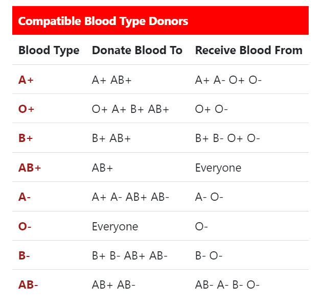

Learn about blood Donation
The human body contains five liters of blood, which is made of several useful components i.e. Whole blood, Platelet, and Plasma.
Each type of component has several medical uses and can be used for different medical treatments. your blood donation determines the best donation for you to make.
For plasma and platelet donation you must have donated whole blood in past two years.

Why Donate blood online